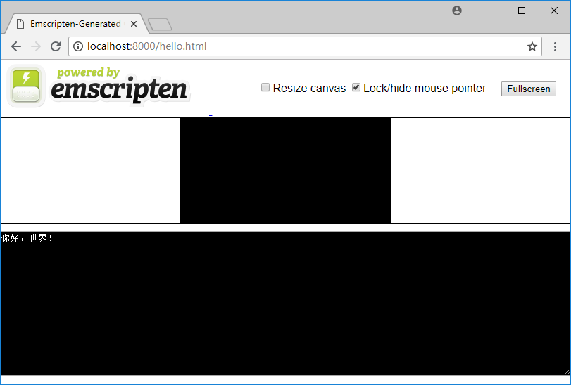

1.2 Hello, world!
This section starts with the classic "Hello, world!" example and shows you how to use Emscripten to compile C/C++ code and run tests.
1.2.1 Build wasm
Create a new C source file named hello.cc. To correctly identify the Chinese string, save it with UTF8 encoding:
//hello.cc
#include <stdio.h>
int main() {
printf("你好，世界！\n");
return 0;
}
info "你好，世界！" is "Hello, world!" in Chinese.
Open the console, use the emsdk_env command described in section 1.1 to set the Emscripten environment variable, switch to the directory where hello.cc is located, and execute the following command:
emcc hello.cc
Two files will be created under the directory: a.out.wasm and a.out.js. The a.out.wasm is the WebAssembly binary code file compiled from the C source file; a.out.js is the glue code generated by Emscripten, which contains the Emscripten runtime environment and the wasm wrap package, import a.out.js will automatically complete the complicated work of .wasm loading/compiling/instantiation, runtime initialization and so on.
The -o option can be used to specify the output file name of emcc. The following command will output hello.wasm and hello.js:
emcc hello.cc -o hello.js
1.2.2 Run on webpage
Unlike NativeCode, the WebAssembly binary code compiled from C/C++ code cannot be run directly. We need to import it into the webpage and browse it through the browser.
In the previous directory, create a new web page named test.html:
<!doctype html>
<html>
<head>
<meta charset="utf-8">
<title>Emscripten:你好，世界！</title>
</head>
<body>
<script src="hello.js"></script>
</body>
</html>
After publishing the directory through the http protocol, use the browser to open test.html, open the developer panel, we will see the following output in the console:

1.2.3 Run in Node.js
The WebAssembly can be run not only on web pages, but also in Node.js(v8.0 and above). Emscripten comes with the Node.js environment, so we can test the program just using node:
> node hello.js
你好，世界！
1.2.4 Generate test page using Emscripten
When using the emcc command, if the output file suffix is specified as .html, then Emscripten will not only generate the WebAssembly binary code(.wasm), glue code(.js), but also generate an additional Emscripten test page, for example if you use the following command:
emcc hello.cc -o hello.html
You will get hello.wasm, hello.js, and hello.html. Where hello.wasm, hello.js are consistent with the contents of the file obtained with -o hello.js. After publishing the directory, use the browser to open hello.html, the page displays as follows:

Below the page is an input and output area that simulates a standard console. The smaller black area above it is a canvas that can be used to simulate a graphical interface. The page automatically loads hello.js and correctly outputs "你好，世界！" on the console.
The test pages generated by Emscripten are easy to use, but the amount of code is large, which is not conducive to explanation. Therefore this book uses manually written web pages for testing.